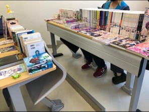
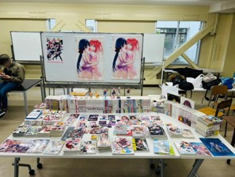

麻布きら同の足跡
H3前会長 竹井
麻布学園きらら同好会が、文化祭にあわせて会誌を発行するらしい。去年の文化祭では会長兼展責の私が何も書かなかったら、原稿が足りなくて発行されなかった。後輩達が頑張っているということで非常に喜ばしい気持ちになった。既に引退した身の私が寄稿するのは、かなり老害といえる行動である(去年書かなかったので尚更)。それでも何も書かずに終わることに対する申し訳なさがあったし、何も協力しないというのもまた申し訳ない気がしたので、麻布きら同の足跡でも記録しておこうと思う。
麻布学園きらら同好会が設立されたのは、2022年の末頃だった。当時M3だった私と他数名が、東大と京大に「きらら同好会」があることを知って、とりあえず模倣して設立した。最初の会員はサークル連合の要件ギリギリの5人だった。会長が私になったのは麻雀をしてる間に祭り上げられていたからであって、別に深い意味はなかった。まだ各大学でのきら同設立ブームも来ておらず、中高でのきらら同好会設立は世界初だった。
別に設立したからといって何か会としての活動をしたわけではなかった。気づいたら会員がかなり増えていたが、それでもマンデースタンプと会員同士の貸し借り以外に会としての活動などは行われなかった。会員同士の交流は多かったし新しくできた知り合い等もいたが、会としては特に何も行わなかった。私は自分のロッカーいっぱいにKRコミックスとその他の漫画を持ってきて、よく他人に貸し出していた。
初めてまともな活動をしたのは、2023年度の新入生オリエンテーションだったと思う。割り当てられた長机いっぱいに単行本を並べて、順に周ってくる新入生を待ち受けた。悪い意味で注目を集めただけで会員は増えなかった。
新入生オリエンテーションは2024年度も参加した。タペストリーやアクスタなどのグッズを増やしたりしたが、案の定会員は増えなかった。つい1ヶ月前には小学校に通っていた新M1への勧誘がうまくいかないのは、当然と言えば当然だと思う。このときはつむつきのタペストリーを2つ並べてたのでツイートが若干伸びたが、それだけだった。


2024年5月には文化祭に出展した。フロンティア展示という教室の一部のみで行う小規模なものながら、「まんがタイムきらら展in麻布」として出展した。当日は予想以上の盛況で、他のきらら同好会員を始めとした多くの客で賑わった。中には仙台や静岡から来てくれた方々もいて、嬉しい限りだった。
きららアニメの上映会を活動としてやろうという声は前々からあったが、実現しなかった。数学科のS教員からは教室を借りるならば協力してくれるという発言もあったりしたが、結局は開催されていない。これは私よりも下の代が実現してくれたら嬉しいと思う。